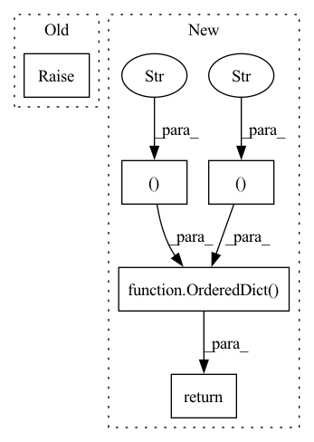

Pattern ID :1031

Before Change
raise NotImplementedError
class MemTransformerLMOnnxConfig(OnnxConfig):
After Change
// Shape of present states (past states when outputting)
// [2, batch_size, n_head, total_seq_len, d_head]
// Note total_seq_len is current seq_len + past_seq_len
presents = [(f"present_{i}", {1: "batch_size", 3: "total_seq_len"}) for i in range(self.config["n_layer"])]
return OrderedDict([("logits", {0: "batch_size", 1: "seq_len"})] + presents)
class HfGPT2OnnxConfig(OnnxConfig):
Provides an ONNX-export configuration for HfGPT2.
In pattern: SUPERPATTERN
Frequency: 3
Non-data size: 5
Instances
Fragment ID: 5081353
Project Name: microsoft/archai
Commit Name: 6878b01a5792e5c3a06a5db1be363600cc31f430
Time: 2022-12-16
Author: gth.rosa@uol.com.br
File Name: archai/nlp/nvidia_transformer_xl/onnx/onnx_utils/configs.py
M Class Name: OnnxConfig
N Class Name: OnnxConfig
M Method Name: outputs(1)
N Method Name: outputs(1)
M Parent Class:
N Parent Class:
M File Name: archai/nlp/nvidia_transformer_xl/onnx/onnx_utils/configs.py
N File Name: archai/nlp/nvidia_transformer_xl/onnx/onnx_utils/configs.py
M Start Line: 53
M End Line: 53
N Start Line: 59
N End Line: 60
'>
Before Change
raise NotImplementedError
@property
def outputs(self) -> None:
After Change
// Shape of past states
// [past_key_values, batch_size, n_head, past_seq_len, d_head]
pasts = [(f"past_{i}", {1: "batch_size", 3: "past_seq_len"}) for i in range(self.config["n_layer"])]
return OrderedDict([("input_ids", {0: "batch_size", 1: "seq_len"})] + pasts)
@property
def outputs(self) -> OrderedDict:
Defines the outputs and their shapes to be used when exporting to ONNX.
'>
Fragment ID: 5081352
Project Name: microsoft/archai
Commit Name: 6878b01a5792e5c3a06a5db1be363600cc31f430
Time: 2022-12-16
Author: gth.rosa@uol.com.br
File Name: archai/nlp/nvidia_transformer_xl/onnx/onnx_utils/configs.py
M Class Name: OnnxConfig
N Class Name: OnnxConfig
M Method Name: inputs(1)
N Method Name: inputs(1)
M Parent Class:
N Parent Class:
M File Name: archai/nlp/nvidia_transformer_xl/onnx/onnx_utils/configs.py
N File Name: archai/nlp/nvidia_transformer_xl/onnx/onnx_utils/configs.py
M Start Line: 45
M End Line: 45
N Start Line: 47
N End Line: 48
'>
Before Change
]
)
raise AssertionError("Unsupported task "{self.task}" for modality `{self.modality}`")
@property
def outputs(self) -> OrderedDict[str, OutputDescription]:
After Change
@property
def _input_descriptions(self) -> OrderedDict[str, InputDescription]:
if self.modality == "text" and self.seq2seq == "decoder":
return OrderedDict(
[
(
"encoder_last_hidden_state",
InputDescription(
"encoder_last_hidden_state",
"Sequence of hidden states at the output of the last layer of the encoder",
)
),
(
"input_ids",
InputDescription(
"decoder_input_ids",
"Indices of decoder input sequence tokens in the vocabulary",
)
),
(
"attention_mask",
InputDescription(
"decoder_attention_mask",
"Mask to avoid performing attention on padding token indices (1 = not masked, 0 = masked)",
)
),
]
)
if self.modality == "text" and self.task in [
"default",
"causal-lm",
'>
Fragment ID: 5081354
Project Name: huggingface/exporters
Commit Name: 0ec6acabdae817c53f9228b042bfed039c4f8f69
Time: 2022-10-03
Author: mail@hollance.com
File Name: src/exporters/coreml/config.py
M Class Name: CoreMLConfig
N Class Name: CoreMLConfig
M Method Name: _input_descriptions(1)
N Method Name: _input_descriptions(1)
M Parent Class:
N Parent Class:
M File Name: src/exporters/coreml/config.py
N File Name: src/exporters/coreml/config.py
M Start Line: 156
M End Line: 253
N Start Line: 181
N End Line: 306